Dựng Video Bằng Mã Lệnh Theo Chuẩn Claude Motion: Từ Phân Tích Reference (Jay E), Kết Quả Thực Chiến 60fps Đến Khuôn Thiết Kế .TSX Cho Người Mới
Tài liệu này được trình bày thành 3 phần rõ ràng để bất kỳ học viên hay người mới nào cũng có thể tự thực hành ngay trên công cụ AI cá nhân của mình (Claude Code, Cursor, hoặc Antigravity):
- Phần I (Reference — Nguồn tham chiếu): Bóc tách từng bước làm, nguyên văn 5 câu lệnh Prompt trên màn hình, logic kỹ thuật và tính khả thi từ video "Claude MOTION is Unreal for Video. Master it in 12 minutes." của Jay E (RoboNuggets).
- Phần II (Kết quả thực chiến): Trình chiếu trực tiếp kết quả biến 10 giây đầu của video quay thô (
Qc offline - ngữ nghĩa đăng fb9.mp4) thành video Risograph 2-Ink Print + Hybrid Talking Head ở tốc độ60fpskèm âm thanh 4 lớp bảo vệ giọng nói. - Phần III (Hướng dẫn cầm tay chỉ việc & Giải phẫu file
.tsx): Giải thích bình dân vì sao cần file mã nguồnVietClaudeMotionRiso10s.tsxvà bảng biếnTweaks, kèm hướng dẫn 5 bước và toàn bộ mã nguồn mẫu để người mới sao chép sang AI của mình làm theo ngay.
Phần I. Reference: Giải Phẫu Từng Bước Làm, 5 Bộ Prompt & Logic Từ Video Gốc Của Jay E (RoboNuggets)
12:08).k: fedu.vn/k/jay-e-claude-motion-video-code.html.1.1. Logic Cốt Lõi: "Công Thức Mã Lệnh (Video-as-Code)" vs. "Chiếc Bánh Nướng Điểm Ảnh (AI Video Pixels)"
Khi làm video bằng AI, hầu hết người mới thường gặp một chỗ vướng rất lớn: nếu đưa toàn bộ yêu cầu vào các công cụ sinh video điểm ảnh (như Sora, Kling, Runway hay Veo), kết quả trả về giống như một chiếc bánh đã nướng chín dính liền thành một khối. Chỉ cần sai chính tả một chữ, muốn đổi giá tiền từ $19 sang $22, hay muốn đổi riêng chiếc cốc trên bàn là bạn buộc phải tạo lại cả video mới — vừa tốn tiền vừa làm hỏng bố cục cũ vốn đã đẹp.
Tweaks diễn ra tức thời trong 1 giây và tốn $0.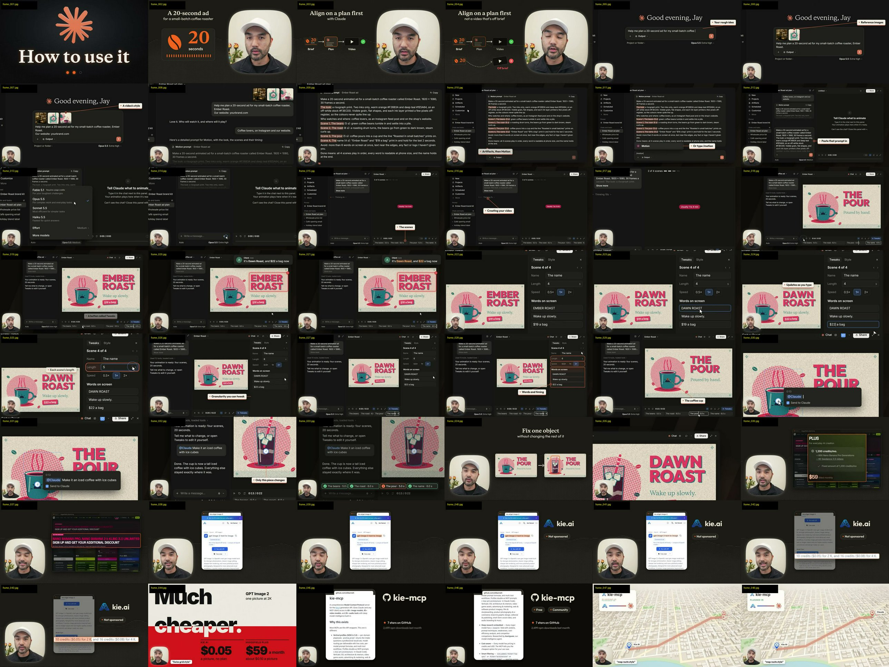
Từ bước thống nhất kế hoạch (Brief → Plan → Video), gọi lệnh /motion, chỉnh bảng Tweaks đến ghim bình luận sửa riêng chiếc cốc.
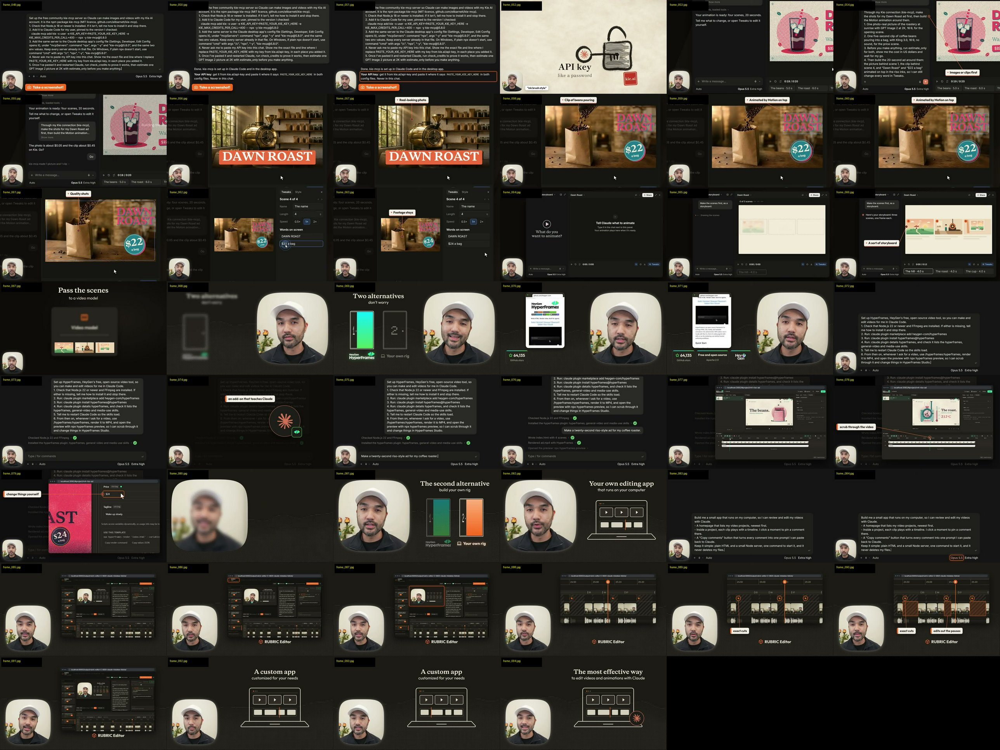
Từ kết nối kie-mcp tạo cảnh thật làm nền, cài HyperFrames miễn phí trên máy đến trình biên tập cục bộ Rubric Editor.
1.2. Từng Bước Làm Trong Video Gốc Của Jay E (4 Cấp Độ Từ Cơ Bản Đến Tự Chủ Hoàn Toàn)
Cấp độ 1: Dựng đồ họa chuyển động thuần bằng Claude Motion (Phút 00:50 – 06:19)
- Bước 1 (Chốt bản kế hoạch ở cửa sổ chat thường): Không gọi lệnh làm video ngay. Mở cửa sổ chat thường, gửi ý tưởng thô + ảnh mẫu phong cách (ví dụ phong cách in Risograph) để thảo luận tới khi AI xuất ra một Bản đề bài 6 thành phần (Motion Prompt) thật chặt chẽ.
- Bước 2 (Kích hoạt
/motion): Chọn mô hình Opus 5.5 (Extra High), gõ/motion(hoặc vàoArtifacts → Motion) và dán bản đề bài đã chốt vào. Chờ 1–4 phút để AI viết mã lệnh cho toàn bộ 4 cảnh. - Bước 3 (Chỉnh sửa 2 tầng —
Tweaks&Comment):- Bấm nút Tweaks ở góc dưới bên phải để mở bảng biến số: gõ đổi chữ
Ember RoastthànhDawn Roast, đổi giá$19 a bagthành$22 a bag, hoặc kéo thanh trượt đổi thời lượng từng cảnh mà không cần chạy lại AI. - Bấm nút Comment ở góc trên: chỉ thẳng chuột vào chiếc cốc ở Cảnh 3 và gõ yêu cầu "Make it an iced coffee with ice cubes" để AI chỉ sửa đúng chiếc cốc đó.
- Bấm nút Tweaks ở góc dưới bên phải để mở bảng biến số: gõ đổi chữ
- Bước 4 (Xuất file MP4): Bấm
Export → MP4để tải video về máy.
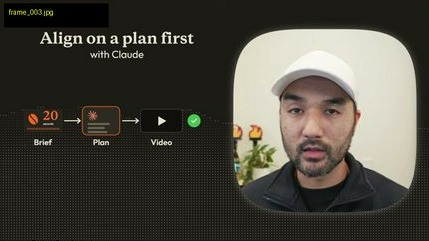
Luôn chốt xong bản mô tả từng cảnh ở cửa sổ chat thường trước khi đưa vào trình dựng chuyển động.
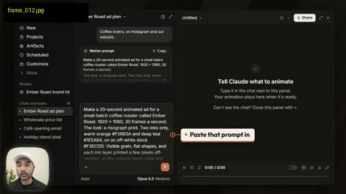
Kích hoạt công cụ Motion và dán toàn bộ bản kế hoạch 6 thành phần vào khung lệnh.
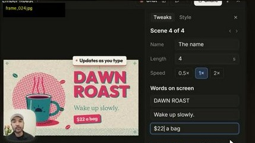
Gõ chữ mới vào cột bên phải (DAWN ROAST, $22 a bag) là chữ trên video đổi ngay lập tức khi tay đang gõ.
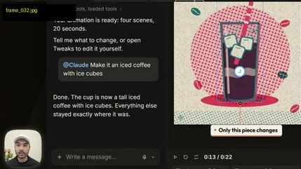
Khoanh vùng chiếc cốc và yêu cầu đổi sang cà phê đá — toàn bộ các cảnh khác được giữ nguyên 100%.
Cấp độ 2: Kết hợp Ảnh & Video AI thực tế qua giao thức MCP (Phút 06:20 – 09:12)
- Cách làm thuận (Tạo cảnh thật làm nền trước → Phủ chữ Motion lên trên): Cài đặt gói mã nguồn mở
kie-mcpkết nối vào tài khoảnKie.ai(tạo ảnh 2K bằng GPT Image 2 chỉ tốn$0.05/ảnh và tạo video 5 giây bằng Kling 3.0 mà không cần đóng gói thuê bao$59/tháng). Luôn yêu cầu AI chạy hàmestimate_onlybáo giá trước, khi đồng ý mới tạo tư liệu rồi bọc lớp chữ Risograph lên trên. - Cách làm ngược (Dùng Motion làm bảng phân cảnh mồi cho mô hình sinh video): Dùng mã lệnh vẽ nhanh 3 khung hình phân cảnh thô có bố cục chuẩn, sau đó đưa sang mô hình Seedance để biến thành phim hoạt hình vẽ tay phong cách Studio Ghibli đúng góc máy.
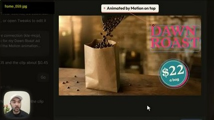
Cảnh quay hạt cà phê đổ vào túi giấy làm nền bên dưới, còn nhãn $22 a bag bằng mã lệnh phủ phía trên để sửa giá bất cứ lúc nào.
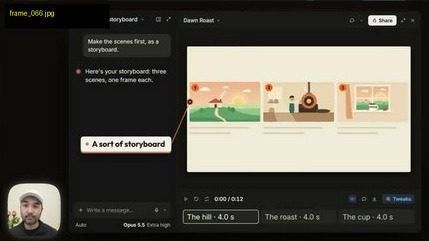
Dựng 3 khung hình bố cục bằng mã lệnh trước để khóa vị trí vật thể rồi mới đưa vào mô hình vẽ hoạt hình.
Cấp độ 3 & 4: Giải pháp miễn phí trên máy cá nhân với HyperFrames & Xưởng biên tập cục bộ (Phút 09:50 – 11:32)
- Cấp độ 3 — Cài đặt
HyperFrames(HeyGen Open-Source) vào Claude Code: Dành cho người dùng tài khoản cá nhân không có nút/motioncủa gói Team/Enterprise. Chỉ cần cài tiện íchheygen-com/hyperframesvào Claude Code, máy sẽ tự viết mã video, kết xuất MP4 bằng FFmpeg và mở giao diện xem trước tạilocalhost(npx hyperframes preview). - Cấp độ 4 — Tự dựng ứng dụng duyệt video cục bộ (
Rubric Editor): Dùng AI viết một trang web nhỏ chạy trên máy tính cho phép đưa cả video người nói thật (Talking Head) vào tự động cắt bỏ khoảng nghỉ (edits out the pauses), bấm vào bất kỳ giây nào trên thanh thời gian để ghim nhận xét và bấm 1 nút gom toàn bộ nhận xét gửi lại cho AI sửa một lần.
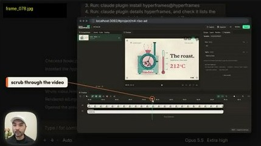
Mở bằng lệnh npx hyperframes preview ngay trên trình duyệt máy cá nhân, có thanh kéo thời gian và cột sửa biến số.
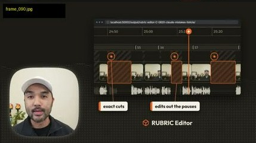
Đưa video quay người nói thật vào cắt gọn các khoảng ngập ngừng và ghim bình luận theo từng mốc giây.
1.3. Nguyên Văn 5 Bộ Prompt Trên Màn Hình Của Jay E (Kèm Giải Nghĩa Tiếng Việt)
Dưới đây là nguyên văn 100% 5 câu lệnh xuất hiện trên màn hình của Jay E tại các mốc giây 02:27, 07:45, 08:02, 10:05 và 10:38:
📋 Prompt 1: Bản Đề Bài 6 Thành Phần Gửi Vào /motion (Giây 02:27 — Frame 009)
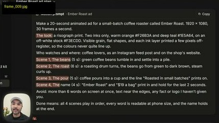
Make a 20-second animated ad for a small-batch coffee roaster called Ember Roast. 1920 x 1080, 30 frames a second.
The look: a risograph print. Two inks only, warm orange #E2683A and deep teal #1E5A64, on an off-white stock #F3ECDD. Visible grain, flat shapes, and each ink layer printed a few pixels off-register, so the colours never quite line up.
Who watches and where: coffee lovers, as an Instagram feed post and on the shop's website.
Scene 1, The beans (5 s): green coffee beans tumble in and settle into a pile.
Scene 2, The roast (6 s): a roasting drum turns, the beans go from green to dark brown, steam curls up.
Scene 3, The pour (5 s): coffee pours into a cup and the line "Roasted in small batches." prints on.
Scene 4, The name (4 s): "Ember Roast" and "$19 a bag" print in and hold for the last 2 seconds.
Avoid: more than 6 words on screen at once, text near the edges, any fact or logo I haven't given you.
Done means: all 4 scenes play in order, every word is readable at phone size, and the name holds at the end.Dịch nghĩa & Cấu trúc 6 phần: (1) Thời lượng 20 giây, kích thước 1920×1080, 30fps → (2) Chất liệu bản in Risograph 2 màu mực Cam#E2683Avà Xanh cổ vịt#1E5A64trên nền giấy kem#F3ECDD, có hạt giấy và in lệch bản vài pixel → (3) Người xem & nơi đăng → (4) Danh sách 4 cảnh kèm số giây cụ thể → (5) Điều cấm (Avoid): không quá 6 chữ trên một màn hình, không đặt chữ sát mép, không tự bịa thông tin → (6) Tiêu chí hoàn thành (Done means): chạy đủ 4 cảnh theo thứ tự, chữ đọc rõ trên điện thoại và giữ yên tên thương hiệu ở 2 giây cuối.
📋 Prompt 2: Cài Đặt kie-mcp Có Chốt Chặn Bảo Mật API Key & Báo Giá Trước (Giây 07:45 — Frame 049)
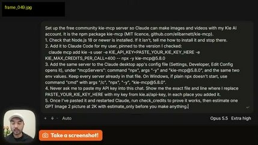
Set up the free community kie-mcp server so Claude can make images and videos with my Kie AI account. It is the npm package kie-mcp (MIT licence, github.com/elibarnell/kie-mcp).
1. Check that Node.js 18 or newer is installed. If it isn't, tell me how to install it and stop there.
2. Add it to Claude Code for my user, pinned to the version I checked:
claude mcp add kie -s user -e KIE_API_KEY=PASTE_YOUR_KIE_KEY_HERE -e KIE_MAX_CREDITS_PER_CALL=500 -- npx -y kie-mcp@0.8.0
3. Add the same server to the Claude desktop app's config file (Settings, Developer, Edit Config opens it), under "mcpServers": command "npx", args "-y" and "kie-mcp@0.8.0", and the same two env values. Keep every server already in that file. On Windows, if plain npx doesn't start, use command "cmd" with args "/c", "npx", "-y", "kie-mcp@0.8.0".
4. Never ask me to paste my API key into this chat. Show me the exact file and line where I replace PASTE_YOUR_KIE_KEY_HERE with my key from kie.ai/api-key, in each place you added it.
5. Once I've pasted it and restarted Claude, run check_credits to prove it works, then estimate one GPT Image 2 picture at 2K with estimate_only before you make anything.📋 Prompt 3: Điều Phối Sinh Ảnh/Video Nền Trước Rồi Bọc Chữ Motion Lên Trên (Giây 08:02 — Frame 054)
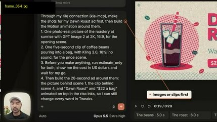
Through my Kie connection (kie-mcp), make the shots for my Dawn Roast ad first, then build the Motion animation around them.
1. One photoreal picture of the roastery at sunrise, with GPT Image 2 at 2K, 16:9, for the opening scene.
2. One five-second clip of coffee beans pouring into a bag, with Kling 3.0, 16:9, no sound, for the price scene.
3. Before you make anything, run estimate_only for both, show me the cost in US dollars and wait for my go.
4. Then build the 20-second ad around them: the photo behind scene 1, the clip behind scene 4, and "Dawn Roast" and "$22 a bag" animated on top in the riso look, so I can still change every word in Tweaks.📋 Prompt 4 & Prompt 5: Cài Đặt HyperFrames Miễn Phí (Giây 10:05) & Tự Dựng "Local Rig" Duyệt Video Theo Giây (Giây 10:38)
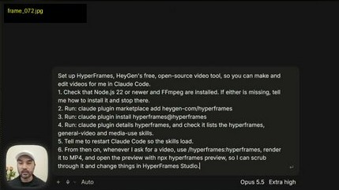
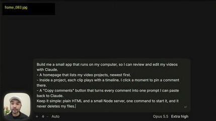
Set up HyperFrames, HeyGen's free, open-source video tool, so you can make and edit videos for me in Claude Code.
1. Check that Node.js 22 or newer and FFmpeg are installed. If either is missing, tell me how to install it and stop there.
2. Run: claude plugin marketplace add heygen-com/hyperframes
3. Run: claude plugin install hyperframes@hyperframes
4. Run: claude plugin details hyperframes, and check it lists the hyperframes, general-video and media-use skills.
5. Tell me to restart Claude Code so the skills load.
6. From then on, whenever I ask for a video, use /hyperframes:hyperframes, render it to MP4, and open the preview with npx hyperframes preview, so I can scrub through it and change things in HyperFrames Studio.Build me a small app that runs on my computer, so I can review and edit my videos with Claude.
- A homepage that lists my video projects, newest first.
- Inside a project, each clip plays with a timeline. I click a moment to pin a comment there.
- A "Copy comments" button that turns every comment into one prompt I can paste back to Claude.
Keep it simple: plain HTML and a small Node server, one command to start it, and it never deletes my files.1.4. Đánh Giá Tính Khả Thi & Bảng Đối Chiếu Khi Triển Khai Thực Tế
Toàn bộ kỹ thuật trong video của Jay E khả thi 100% ngay trên máy tính cá nhân thông qua Remotion Studio (60fps) hoặc HyperFrames. Khi đặt lên bàn cân đối chiếu, hệ thống kết hợp Remotion 60fps + Bảng biến Tweaks + Phối âm 4 lớp sfx.fedu.vn mang lại những lợi thế thực tế rất rõ rệt:
| Hạng mục kỹ thuật | Cách làm trong video của Jay E (Claude Motion 30fps) | Cách làm thực chiến trong bài học này (Remotion 60fps + Tweaks) |
|---|---|---|
| Tốc độ khung hình & Hiển thị Tiếng Việt | 30fps trên đám mây (yêu cầu gói Team/Enterprise); dễ lỗi dấu khi gặp chữ Tiếng Việt có dấu chồng. |
60fps mượt gấp đôi chạy trực tiếp trên máy tính cá nhân; tích hợp hàm nfc() và lineHeight: 1.28 hiển thị 100% dấu Tiếng Việt sắc nét. |
| Chất liệu Risograph 2-Ink Print | Nền giấy kem #F3ECDD, mực Cam #E2683A và Xanh cổ vịt #1E5A64 in lệch bản vài pixel. |
Kế thừa nguyên bản bảng màu Risograph + hạt giấy radial-gradient + bóng chữ lệch bản 5px–8px + rung vi mô liên tục chống khung hình chết. |
| Kết hợp Video người nói thật (Hybrid Talking Head) | Chỉ xuất hiện ở phần giới thiệu cuối video trên trình biên tập riêng. | Lồng trực tiếp khung chân dung người nói thật vào Cảnh 2 (khung chữ nhật bo góc Risograph) và Cảnh 6 (khung tròn xoay viền nét đứt). |
| Âm thanh & Tiếng động (SFX) | Video xuất ra từ Claude Motion hoàn toàn câm (No sound). | Ghép sẵn giọng nói thật + 4 lớp hiệu ứng âm thanh (sfx.fedu.vn) tự động nén nhẹ khi có tiếng người nói (Voice-Safe). |
Bảng biến số Tweaks sửa chữ & màu |
Nút Tweaks ở góc dưới bên phải màn hình Claude Motion. |
Khai báo trực tiếp đối tượng defaultClaudeMotionRisoProps ở đầu file .tsx — sửa chữ, đổi màu giấy/mực hoặc mở trên trình duyệt gõ trực tiếp y hệt Claude Motion. |
Phần II. Kết Quả Thực Chiến: 10 Giây Đầu Video "Ngữ Nghĩa" Theo Phong Cách Claude Motion Risograph + Hybrid Talking Head (60fps)
Áp dụng chính xác cấu trúc Prompt 6 thành phần và chất liệu Risograph 2-Ink Print từ Phần I vào 10 giây đầu tiên của video gốc Qc offline - ngữ nghĩa đăng fb9.mp4, dưới đây là kết quả đối chiếu trực diện giữa video đầu vào và thành phẩm hoàn chỉnh:
2.1. Bàn Đối Chiếu Trực Diện (Before & After): Video Gốc Quay Thô vs. Thành Phẩm Claude Motion Risograph 60fps
File gốc trước khi xử lý: có sẵn chữ cũ đốt cứng ở mép trên/dưới và chưa có đồ họa chuyển động Risograph theo nhịp nói.
Thành phẩm qc_fb9_claude_motion_10s.mp4: 7 phân cảnh Risograph + 2 cảnh Hybrid Talking Head đã cắt sạch chữ rác cũ, chạy mượt 60fps kèm âm thanh 4 lớp.
2.2. Bản Kế Hoạch & Prompt 6 Thành Phần Đã Thực Thi
600 frames ở tốc độ 60fps), khung hình dọc 1080×1920 (9:16), định dạng xuất H.264 yuv420p tương thích mọi thiết bị di động và Telegram.• Nền giấy in kem cổ điển #F3ECDD phủ hạt giấy mịn.
• Hai màu mực chủ đạo: Cam đất #E2683A và Xanh cổ vịt #1E5A64, kết hợp Mực than đậm #122026 cho lớp chữ chính.
• Mọi hình vẽ SVG và tiêu đề đều có lớp mực phụ in lệch trục (
5px–8px off-register) tạo chiều sâu xưởng in thủ công.inset: 54px); không để lọt bất kỳ dòng chữ cũ nào đã đốt sẵn trong video gốc vào khung chân dung người nói.microScale và jitterX/Y); con dấu chốt KỸ NĂNG THẬT > DIỄN XUẤT đóng xuống và giữ vững đến hết giây thứ 10.2.3. Bảng Giải Phẫu 7 Phân Cảnh Khớp Từng Nhịp Thoại (0.00s – 10.00s) & Lưới Kiểm Định
| Phân cảnh | Mốc giây & Frame (60fps) | Lời thoại gốc của anh Việt | Thiết kế Chuyển động (Risograph 2-Ink + Hybrid Talking Head) |
|---|---|---|---|
| Scene 1 | 0.00s – 1.47s( f0 → f88) |
"Cái mạng xã hội cũ" | Bánh răng mạng lưới cũ gồm 2 bản mực Cam #E2683A và Xanh #1E5A64 in lệch trục (+6px, +5px) quay ngược chiều nhau, đẩy tiêu đề CÁI MẠNG / XÃ HỘI CŨ trượt lên bằng lò xo vật lý. |
| Scene 2 | 1.47s – 3.03s( f88 → f182) |
"mà mình từng biết" | Hybrid Talking Head #1: Khung chân dung anh Việt nói chuyện thật (đã căn objectPosition: '50% 74%' và phóng scale(1.28) cắt sạch dòng chữ cũ ở mép trên video gốc) đặt trong khung Risograph lệch trục Cam/Xanh kèm tiêu đề MÀ MÌNH / TỪNG BIẾT. |
| Scene 3 | 3.03s – 3.97s( f182 → f238) |
"nó đã chết rồi." | Hard Plate Invert: Đảo toàn bộ nền giấy sang Cam đất #E2683A (từ f182) rồi sập sang Đen xanh #122026 tại đúng chữ "chết rồi" (f204); đường nhịp tim đứt gãy bị thanh mực cam gạch chéo kèm chữ NÓ ĐÃ / CHẾT RỒI. đập mạnh. |
| Scene 4 | 3.97s – 5.43s( f238 → f326) |
"Bây giờ là kỷ nguyên của" | La bàn 2 vòng quỹ đạo elip Risograph (1 vòng Cam, 1 vòng Xanh cổ vịt lệch góc 45°) xoay giao thoa, mở ra dòng chữ BÂY GIỜ / LÀ KỶ NGUYÊN CỦA. |
| Scene 5 | 5.43s – 7.30s( f326 → f438) |
"NGỮ NGHĨA" | Hero Centerpiece: Hai khối cầu mực Cam và Xanh tách mở sang hai phía (vennSpread = 64px) tạo nhân giao thoa ở tâm, đẩy chữ đại NGỮ / NGHĨA cỡ lớn 148px nổi bật giữa trang giấy. |
| Scene 6 | 7.30s – 8.23s( f438 → f494) |
"Bạn không cần thiết phải làm" | Hybrid Talking Head #2: Khung tròn Risograph đường kính 520px có viền nét đứt màu Cam xoay tròn quanh cảnh anh Việt đang nói chuyện trực diện (dùng Sequence + objectPosition: '50% 24%' sạch 100% chữ cũ) kèm dòng chữ BẠN KHÔNG CẦN / THIẾT PHẢI LÀM. |
| Scene 7 | 8.23s – 10.00s( f494 → f600) |
"idol trên video" | Nhãn mờ × DIỄN VIÊN HÀO NHOÁNG phía trên, thanh mực Cam gạch chéo ngang chữ IDOL / TRÊN VIDEO tại f532, sau đó đóng dấu chốt KỸ NĂNG THẬT > DIỄN XUẤT tại f542 và giữ vững đến hết giây thứ 10. |
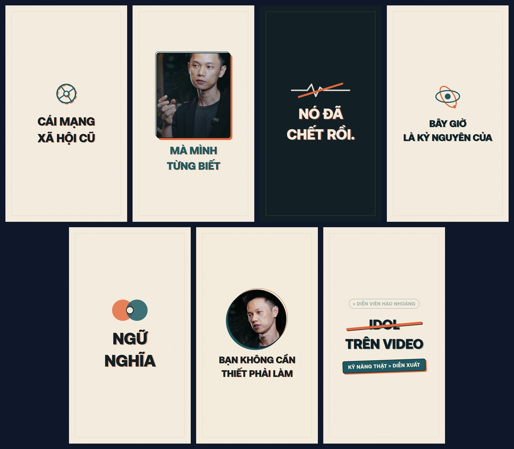
Hàng trên: Scene 1 (Bánh răng mạng cũ), Scene 2 (Hybrid Talking Head #1), Scene 3 (Đảo bản in Chết rồi), Scene 4 (La bàn kỷ nguyên mới). Hàng dưới: Scene 5 (Giao thoa Ngữ Nghĩa), Scene 6 (Hybrid Talking Head #2 khung tròn), Scene 7 (Gạch chéo Idol & Đóng dấu Kỹ năng thật).
2.4. Cận Cảnh Từng Phân Cảnh (Scene 1 → Scene 7) & Lưới Kiểm Định 9 Mốc Thời Gian
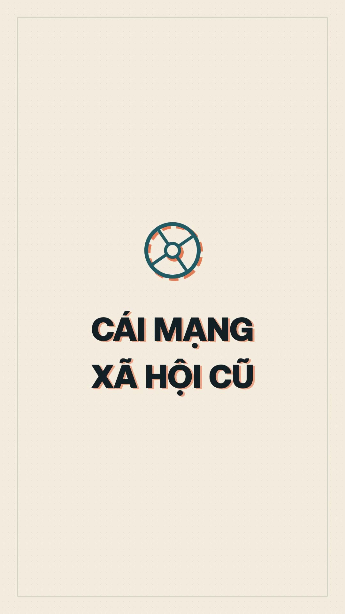
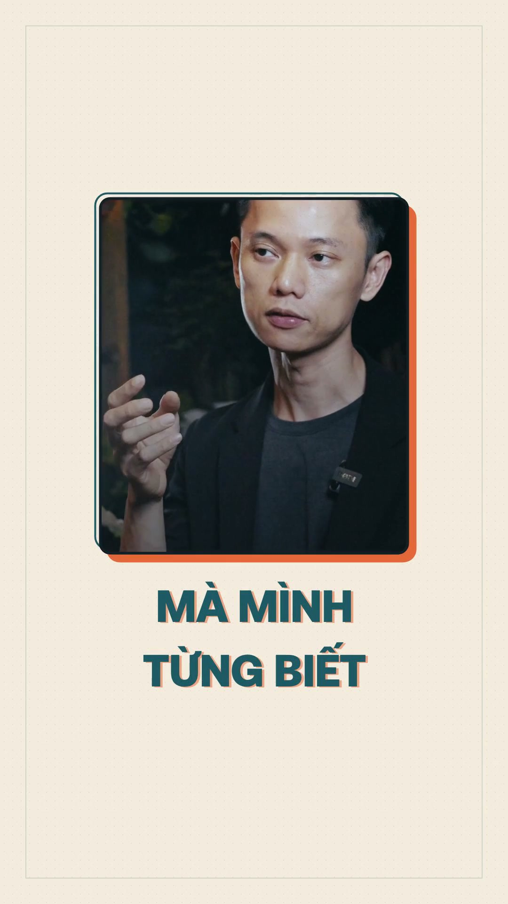
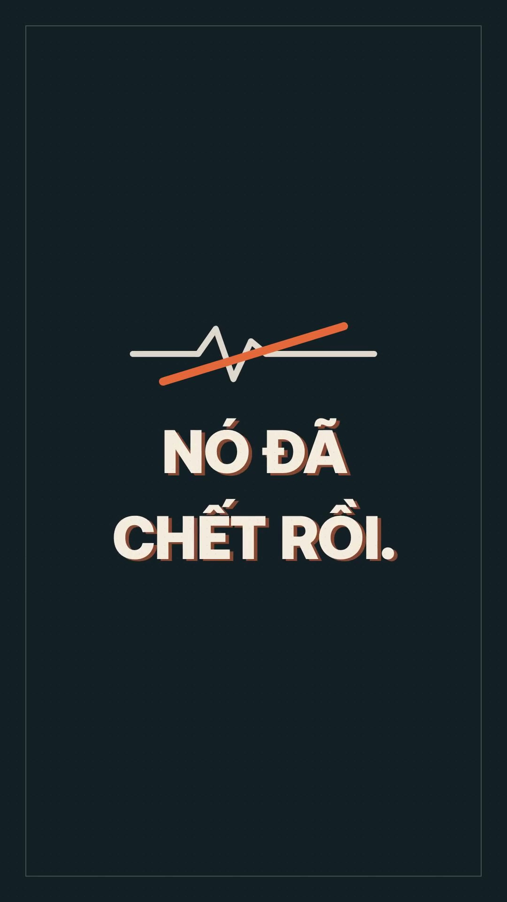
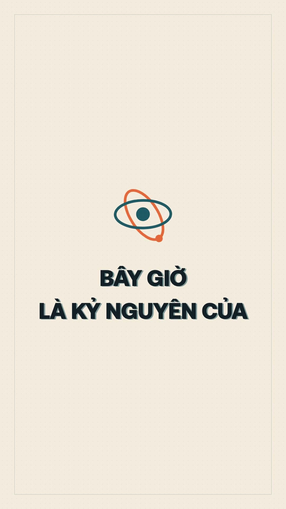
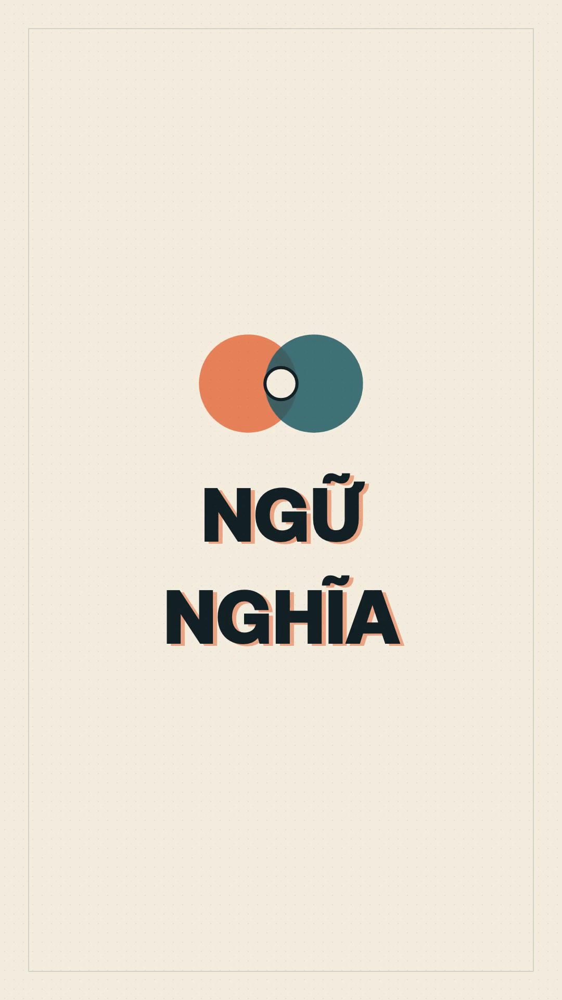
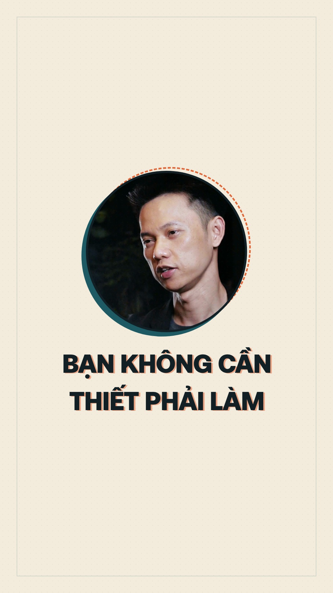
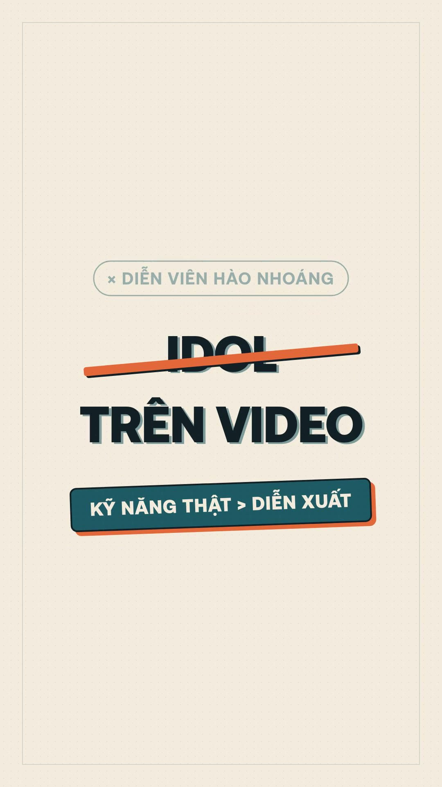
Thanh mực cam gạch ngang chữ IDOL và đóng dấu KỸ NĂNG THẬT > DIỄN XUẤT giữ đến hết giây thứ 10.
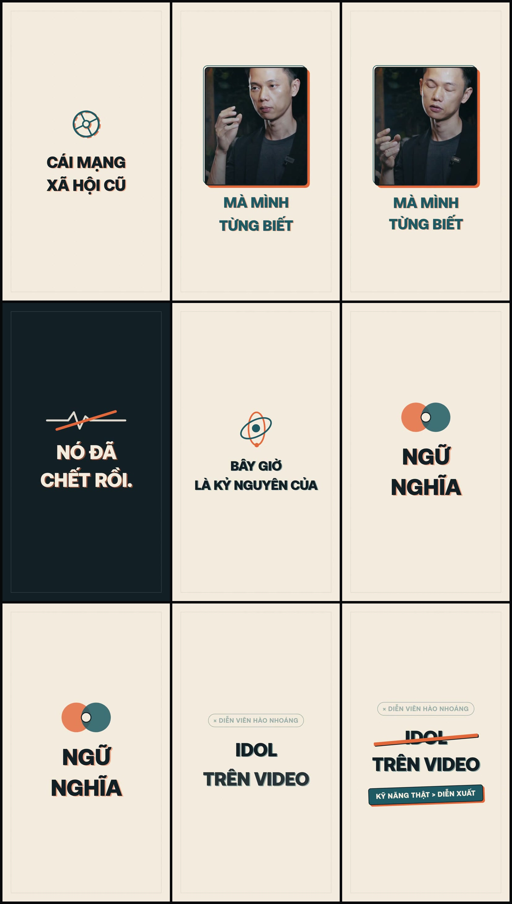
Kết quả xuất tự động từ công cụ kiểm định verify_motion_deliverable.py trước khi gửi qua Telegram.
Phần III. Hướng Dẫn Cho Người Mới Tự Làm Trên AI Của Họ & Giải Thích Chi Tiết File Mã Nguồn .TSX
3.1. File Mã Nguồn VietClaudeMotionRiso10s.tsx Và Bảng Biến Tweaks Dùng Để Làm Gì?
Người mới bắt đầu thường thắc mắc: "Tôi đã có file video .mp4 để đăng lên mạng rồi, vậy file mã nguồn .tsx kèm bảng biến Tweaks dùng để làm gì?"
Bạn hãy hình dung đơn giản như thế này: Nếu file .mp4 là chiếc bánh đã nướng chín để mang đi mời khách, thì file VietClaudeMotionRiso10s.tsx chính là Khuôn thiết kế gốc (giống như file thiết kế gốc trên Canva hoặc dự án gốc trên CapCut) được lưu trên máy tính của bạn. Đặc biệt, ở ngay đầu file .tsx này có bảng biến số Tweaks (defaultClaudeMotionRisoProps) phục vụ 3 việc thực tế:
Tweaks của Claude Motion):Toàn bộ 15 dòng chữ xuất hiện trong 7 phân cảnh đã được gom hết lên đầu file (
scene1Line1, scene1Line2, ..., scene7Stamp). Khi bạn muốn đổi câu kết từ "KỸ NĂNG THẬT > DIỄN XUẤT" thành "ĐÓNG GÓI KỸ NĂNG THẬT", bạn (hoặc AI của bạn) chỉ cần sửa đúng 1 dòng chữ đó rồi xuất lại file — đảm bảo 100% khung hình mặt người nói, hiệu ứng gạch chéo và tiếng động không bị lệch đi dù chỉ 1 mili-giây.Ở cuối bảng biến có đúng 4 ô màu:
stockColor (Màu nền giấy), orangeInk (Màu mực phụ 1), tealInk (Màu mực phụ 2) và darkInk (Màu chữ chính). Nếu bạn bảo AI: "Tôi không thích màu giấy kem nữa, hãy đổi sang nền Đen Vàng Gold", chỉ cần thay 4 mã màu này là cả 7 phân cảnh tự động đổi màu đồng bộ mà không phải vẽ lại bất kỳ hình nào.Khi bạn chạy lệnh mở
Remotion Studio trên trình duyệt, bảng biến Tweaks này sẽ tự động hiển thị thành các ô nhập chữ ở cột bên phải màn hình. Bạn gõ chữ mới vào ô nào thì chữ trên video đổi ngay lập tức theo tay bạn gõ — giống hệt lúc Jay E đổi chữ Ember Roast thành Dawn Roast và giá $19 thành $22 ở phút 04:25 trong video YouTube.3.2. Năm Bước Cầm Tay Chỉ Việc Để Người Mới Tự Làm Theo Trên AI Của Mình
Dù bạn đang dùng Claude Code, Cursor, Windsurf hay Antigravity trên máy tính cá nhân, bạn hoàn toàn không cần biết lập trình mà chỉ cần làm theo đúng 5 bước sau:
Mở cửa sổ dòng lệnh (Terminal) hoặc bảo trợ lý AI trên máy của bạn chạy lệnh khởi tạo dự án:
npx create-video@latest my-motion-studioSau đó cài thêm bộ kỹ năng hướng dẫn AI viết chuyển động mượt:
npx skills add remotion-dev/skillspublic/:Chép file video quay người nói của bạn (ví dụ
video_goc.mp4) vào thư mục my-motion-studio/public/. Ghi ra các câu thoại chính theo từng khoảng giây (hoặc bảo AI chạy FFmpeg/Whisper tách lời thoại theo giây giúp bạn).VietClaudeMotionRiso10s.tsx bên dưới làm khuôn mẫu cho AI:Tải hoặc sao chép toàn bộ nội dung file
VietClaudeMotionRiso10s.tsx ở Mục 3.5 bên dưới, gửi vào khung chat của AI kèm theo Khung Prompt Mẫu ở Mục 3.3. Nhờ có sẵn file .tsx mẫu này, AI của bạn sẽ hiểu ngay cách tạo chữ in lệch bản Risograph, cách lồng khung video người nói và cách tách bảng biến Tweaks mà không bao giờ viết code lỗi.Gõ lệnh
npx remotion studio để mở bàn dựng trên trình duyệt. Bấm vào các ô biến số ở cột bên phải để sửa chữ, đổi mã màu mực hoặc căn lại vị trí khung hình mặt người nói (objectPosition) cho vừa mắt nhất.Bảo AI hoặc chạy trực tiếp câu lệnh kết xuất:
npx remotion render src/index.ts VietClaudeMotionRiso-10s out/video_thanh_pham.mp4 --codec=h264 --pixel-format=yuv420p3.3. Khung Prompt Mẫu (Copy-Paste) Dành Cho Người Mới Gửi Vào AI Của Mình
Khi làm một video mới, bạn chỉ cần sao chép khung câu lệnh dưới đây, thay lời thoại của bạn vào phần danh sách phân cảnh và đính kèm file VietClaudeMotionRiso10s.tsx (ở Mục 3.5) cho AI:
Tôi muốn tạo một video đồ họa chuyển động kết hợp người nói thật (Hybrid Talking Head) dài 10 giây, kích thước dọc 1080x1920, tốc độ 60fps bằng Remotion, dựa trên khuôn mẫu file VietClaudeMotionRiso10s.tsx đính kèm.
1. File video gốc của tôi đặt tại: public/video_goc.mp4 (Hãy lấy âm thanh giọng nói từ video này).
2. Chất liệu thị giác (The Look — Risograph 2-Ink Print):
- Nền giấy in kem #F3ECDD có phủ hạt giấy mịn.
- Hai màu mực chủ đạo: Cam đất #E2683A và Xanh cổ vịt #1E5A64, chữ chính màu than đậm #122026.
- Các hình vẽ SVG và chữ tiêu đề đều in lệch bản vài pixel (off-register) và dùng hàm nfc() để giữ chuẩn dấu Tiếng Việt.
3. Bảng phân cảnh theo đúng nhịp lời nói của tôi (0.00s - 10.00s @ 60fps):
- Scene 1 (0.0s - 1.5s | f0 - f90): Lời thoại "[Điền câu 1]" -> Đồ họa SVG 2 lớp mực + chữ tiêu đề.
- Scene 2 (1.5s - 3.0s | f90 - f180): Lời thoại "[Điền câu 2]" -> Khung chữ nhật Hybrid Talking Head chiếu cảnh tôi đang nói trong video_goc.mp4 + chữ tiêu đề bên dưới.
- Scene 3 (3.0s - 4.0s | f180 - f240): Lời thoại "[Điền câu 3 nhấn mạnh]" -> Đảo màu nền (Hard Plate Invert) + hiệu ứng gạch chéo nhấn mạnh.
- Scene 4 (4.0s - 5.5s | f240 - f330): Lời thoại "[Điền câu 4]" -> Đồ họa vòng quỹ đạo elip 2 màu mực xoay giao thoa + chữ tiêu đề.
- Scene 5 (5.5s - 7.3s | f330 - f438): Lời thoại "[Điền từ khóa chính]" -> Hai khối cầu mực Cam & Xanh tách mở ở tâm + chữ đại cỡ 148px.
- Scene 6 (7.3s - 8.3s | f438 - f498): Lời thoại "[Điền câu 6]" -> Khung tròn Hybrid Talking Head viền nét đứt xoay quanh cảnh tôi đang nói + chữ tiêu đề.
- Scene 7 (8.3s - 10.0s | f498 - f600): Lời thoại "[Điền câu chốt]" -> Gạch chéo từ khóa sai lầm và đóng dấu câu kết giữ yên đến hết giây thứ 10.
4. Yêu cầu bắt buộc về bảng biến Tweaks:
- Hãy tách toàn bộ các dòng chữ hiển thị và 4 mã màu ra interface Props và đối tượng defaultProps ở đầu file .tsx (giống hệt VietClaudeMotionRiso10s.tsx) để tôi có thể tự sửa chữ và màu sắc trong bảng Tweaks bất cứ lúc nào.
- Sau khi viết xong file .tsx và đăng ký vào src/Root.tsx, hãy kết xuất ra file MP4 (yuv420p) và chụp lưới khung hình các cảnh để tôi kiểm tra.3.4. Giải Thích Từng Khối Lệnh Trong File VietClaudeMotionRiso10s.tsx (Đọc Hiểu Trong 5 Phút)
Để bạn tự tin chỉnh sửa file .tsx ngay cả khi chưa từng học lập trình React, dưới đây là giải thích chi tiết từng khối trong file VietClaudeMotionRiso10s.tsx:
Khối 1 (Dòng 1 – 60): Bảng Biến Số Tweaks (Nơi Bạn Tự Sửa Chữ Và Màu Sắc)
Đây là khu vực duy nhất bạn cần mở ra sửa khi muốn đổi nội dung chữ hoặc đổi màu sắc. Bạn chỉ cần thay phần chữ nằm trong dấu nháy đơn '...':
export const defaultClaudeMotionRisoProps: Required<ClaudeMotionRisoProps> = {
scene1Line1: 'CÁI MẠNG', // Chữ dòng 1 của Cảnh 1
scene1Line2: 'XÃ HỘI CŨ', // Chữ dòng 2 của Cảnh 1
scene2Line1: 'MÀ MÌNH', // Chữ dòng 1 của Cảnh 2 (Hybrid Talking Head #1)
scene2Line2: 'TỪNG BIẾT', // Chữ dòng 2 của Cảnh 2
scene3Line1: 'NÓ ĐÃ', // Chữ dòng 1 của Cảnh 3 (Đảo màu nền)
scene3Line2: 'CHẾT RỒI.', // Chữ dòng 2 của Cảnh 3
scene4Line1: 'BÂY GIỜ', // Chữ dòng 1 của Cảnh 4
scene4Line2: 'LÀ KỶ NGUYÊN CỦA', // Chữ dòng 2 của Cảnh 4
scene5Hero1: 'NGỮ', // Chữ đại dòng 1 của Cảnh 5 (148px)
scene5Hero2: 'NGHĨA', // Chữ đại dòng 2 của Cảnh 5 (148px)
scene6Line1: 'BẠN KHÔNG CẦN', // Chữ dòng 1 của Cảnh 6 (Hybrid Talking Head #2)
scene6Line2: 'THIẾT PHẢI LÀM', // Chữ dòng 2 của Cảnh 6
scene7Target1: 'IDOL', // Chữ bị gạch chéo dòng 1 ở Cảnh 7
scene7Target2: 'TRÊN VIDEO', // Chữ dòng 2 ở Cảnh 7
scene7Stamp: 'KỸ NĂNG THẬT > DIỄN XUẤT', // Con dấu đóng chốt ở cuối video
stockColor: '#F3ECDD', // Mã màu nền giấy kem
orangeInk: '#E2683A', // Mã màu mực Cam đất
tealInk: '#1E5A64', // Mã màu mực Xanh cổ vịt
darkInk: '#122026', // Mã màu mực Than đậm (chữ chính)
};Khối 2 (Dòng 62 – 161): Bộ Khuôn Chữ In Lệch Bản <RisoHeadline /> & Bảo Vệ Dấu Tiếng Việt
Trong phong cách in Risograph, mỗi dòng chữ không bao giờ chỉ có một lớp màu đơn điệu mà gồm 2 lớp mực chồng lên nhau nhưng lệch đi vài pixel (offsetX = 5, offsetY = 4). Bộ khuôn <RisoHeadline /> tự động nhân đôi mỗi dòng chữ thành:
- Lớp mực lót phía dưới (
Off-register Underlayer Ink): Đặt lệch sang phải5px, lệch xuống dưới4pxvới độ trong suốtopacity: 0.55. - Lớp mực chính phía trên (
Primary Ink Layer): Hiển thị sắc nét với chiều cao dònglineHeight: 1.28vàpaddingTop: '0.12em'kết hợp hàmnfc(rawLine)để các chữ Tiếng Việt in hoa có dấu chồng (nhưẤ,Ể,Ữ,Ộ) không bao giờ bị cắt mất dấu.
Khối 3 (Dòng 163 – 218): Hiệu Ứng Hạt Giấy, Rung Vi Mô Chống Đứng Hình & Đảo Màu Nền
Để video nhìn giống một bản in sống động thay vì ảnh tĩnh trên máy tính, khối lệnh này tạo ra 3 hiệu ứng chạy xuyên suốt 600 khung hình:
// 1. Chuyển động thở vi mô liên tục (không có bất kỳ khung hình nào đứng chết)
const microScale = 1 + Math.sin(frame * 0.045) * 0.007;
const jitterX = Math.sin(frame * 0.35) * 0.8;
const jitterY = Math.cos(frame * 0.28) * 0.8;
// 2. Tự động đảo màu nền ở Cảnh 3 ("nó đã chết rồi")
const isScene3 = frame >= 182 && frame < 238;
const isScene3Slam = frame >= 204 && frame < 238;
const bgColor = isScene3Slam ? darkInk : isScene3 ? orangeInk : stockColor;Khối 4 (Dòng 324 – 423 & 657 – 740): Cách Lồng Video Người Nói Thật Và Cắt Bỏ Chữ Rác Cũ Ở Mép Video
Khi bạn dùng lại một video cũ đã lỡ chèn sẵn chữ ở mép trên hoặc mép dưới (như video Qc offline - ngữ nghĩa đăng fb9.mp4), làm sao để đưa mặt người nói vào khung Risograph mà không bị dính dòng chữ cũ? Trong VietClaudeMotionRiso10s.tsx, kỹ thuật xử lý nằm ở thuộc tính objectPosition và transform: scale(...) của thẻ <OffthreadVideo />:
<OffthreadVideo
src={staticFile('motion02/qc_offline_27s_1080p60.mp4')}
muted
style={{
width: '100%',
height: '100%',
objectFit: 'cover',
objectPosition: '50% 74%', // Dịch khung lấy nét xuống vùng gương mặt, đẩy chữ cũ ở mép trên ra ngoài
transform: 'scale(1.28)', // Phóng nhẹ 1.28 lần để lấy cận cảnh chân dung sạch 100%
transformOrigin: '50% 68%',
filter: 'contrast(1.08) saturate(0.92)', // Chỉnh màu video người thật ăn nhập với màu mực Risograph
}}
/>Khối 5 (Dòng 219 – 846): Cách Chia Thời Gian 7 Phân Cảnh Theo Số Khung Hình (Frame)
Ở tốc độ 60 khung hình/giây (60fps), mỗi 1 giây tương ứng với 60 frames (10 giây = 600 frames). Do đó, việc hẹn giờ cho từng cảnh xuất hiện và biến mất trong file .tsx chỉ đơn giản là phép nhân số giây với 60:
- Scene 1 (
0.00s – 1.47s):frame < 88 - Scene 2 (
1.47s – 3.03s):frame >= 88 && frame < 182 - Scene 3 (
3.03s – 3.97s):frame >= 182 && frame < 238 - Scene 4 (
3.97s – 5.43s):frame >= 238 && frame < 326 - Scene 5 (
5.43s – 7.30s):frame >= 326 && frame < 438 - Scene 6 (
7.30s – 8.23s):frame >= 438 && frame < 494 - Scene 7 (
8.23s – 10.00s):frame >= 494(Giữ con dấu kết thúc đếnframe 600).
3.5. Toàn Bộ Mã Nguồn Gốc File VietClaudeMotionRiso10s.tsx (Bản Đầy Đủ 100% Có Nút Sao Chép & Tải File)
Dưới đây là toàn bộ 100% mã nguồn của file VietClaudeMotionRiso10s.tsx đã tạo ra video ở Phần II. Người mới có thể bấm nút "Sao chép toàn bộ file .TSX" hoặc "Tải file VietClaudeMotionRiso10s.tsx" để đưa trực tiếp vào dự án AI của mình:
import React from 'react';
import {
AbsoluteFill,
Audio,
Easing,
OffthreadVideo,
Sequence,
interpolate,
spring,
staticFile,
useCurrentFrame,
useVideoConfig,
} from 'remotion';
const EXPO_OUT = Easing.bezier(0.16, 1, 0.3, 1);
const nfc = (s: string): string => s.normalize('NFC');
export interface ClaudeMotionRisoProps {
// Tweaks Panel (Editable Variables just like Claude Motion Tweaks)
scene1Line1?: string;
scene1Line2?: string;
scene2Line1?: string;
scene2Line2?: string;
scene3Line1?: string;
scene3Line2?: string;
scene4Line1?: string;
scene4Line2?: string;
scene5Hero1?: string;
scene5Hero2?: string;
scene6Line1?: string;
scene6Line2?: string;
scene7Target1?: string;
scene7Target2?: string;
scene7Stamp?: string;
stockColor?: string;
orangeInk?: string;
tealInk?: string;
darkInk?: string;
}
export const defaultClaudeMotionRisoProps: Required<ClaudeMotionRisoProps> = {
scene1Line1: 'CÁI MẠNG',
scene1Line2: 'XÃ HỘI CŨ',
scene2Line1: 'MÀ MÌNH',
scene2Line2: 'TỪNG BIẾT',
scene3Line1: 'NÓ ĐÃ',
scene3Line2: 'CHẾT RỒI.',
scene4Line1: 'BÂY GIỜ',
scene4Line2: 'LÀ KỶ NGUYÊN CỦA',
scene5Hero1: 'NGỮ',
scene5Hero2: 'NGHĨA',
scene6Line1: 'BẠN KHÔNG CẦN',
scene6Line2: 'THIẾT PHẢI LÀM',
scene7Target1: 'IDOL',
scene7Target2: 'TRÊN VIDEO',
scene7Stamp: 'KỸ NĂNG THẬT > DIỄN XUẤT',
stockColor: '#F3ECDD',
orangeInk: '#E2683A',
tealInk: '#1E5A64',
darkInk: '#122026',
};
// Off-register Risograph Headline Helper (6 words max rule, NFC Vietnamese safe)
const RisoHeadline: React.FC<{
lines: string[];
fontSize?: number;
mainColor: string;
offsetColor: string;
offsetX?: number;
offsetY?: number;
align?: 'center' | 'left';
lineGap?: number;
frameOffset?: number;
}> = ({
lines,
fontSize = 92,
mainColor,
offsetColor,
offsetX = 5,
offsetY = 4,
align = 'center',
lineGap = 10,
frameOffset = 0,
}) => {
const frame = useCurrentFrame();
const { fps } = useVideoConfig();
return (
<div
style={{
display: 'flex',
flexDirection: 'column',
alignItems: align === 'center' ? 'center' : 'flex-start',
gap: lineGap,
overflow: 'visible',
padding: '12px 24px',
}}
>
{lines.map((rawLine, idx) => {
const line = nfc(rawLine);
const s = spring({
frame: Math.max(0, frame - frameOffset - idx * 4),
fps,
config: { mass: 0.72, damping: 14, stiffness: 190 },
});
const y = interpolate(s, [0, 1], [38, 0]);
const op = interpolate(s, [0, 0.4, 1], [0, 1, 1]);
return (
<div
key={idx}
style={{
position: 'relative',
transform: `translateY(${y}px)`,
opacity: op,
overflow: 'visible',
paddingTop: '0.12em',
paddingBottom: '0.12em',
}}
>
{/* Off-register Underlayer Ink */}
<span
aria-hidden
style={{
position: 'absolute',
left: offsetX,
top: offsetY,
fontFamily: "'SVN-Aeonik', 'Inter', sans-serif",
fontSize,
fontWeight: 800,
lineHeight: 1.28,
letterSpacing: '-0.02em',
color: offsetColor,
opacity: 0.55,
whiteSpace: 'nowrap',
userSelect: 'none',
}}
>
{line}
</span>
{/* Primary Ink Layer */}
<span
style={{
position: 'relative',
fontFamily: "'SVN-Aeonik', 'Inter', sans-serif",
fontSize,
fontWeight: 800,
lineHeight: 1.28,
letterSpacing: '-0.02em',
color: mainColor,
whiteSpace: 'nowrap',
display: 'inline-block',
}}
>
{line}
</span>
</div>
);
})}
</div>
);
};
export const VietClaudeMotionRiso10s: React.FC<ClaudeMotionRisoProps> = (rawProps) => {
const props = { ...defaultClaudeMotionRisoProps, ...rawProps };
const frame = useCurrentFrame();
const { fps } = useVideoConfig();
const { stockColor, orangeInk, tealInk, darkInk } = props;
// Continuous micro-motion (Hold rule: no dead static frame)
const microScale = 1 + Math.sin(frame * 0.045) * 0.007;
const jitterX = Math.sin(frame * 0.35) * 0.8;
const jitterY = Math.cos(frame * 0.28) * 0.8;
// Dynamic background color per scene (Scene 3 hard invert on "nó đã chết rồi")
const isScene3 = frame >= 182 && frame < 238;
const isScene3Slam = frame >= 204 && frame < 238;
const bgColor = isScene3Slam
? darkInk
: isScene3
? orangeInk
: stockColor;
return (
<AbsoluteFill
style={{
backgroundColor: bgColor,
overflow: 'hidden',
justifyContent: 'center',
alignItems: 'center',
}}
>
{/* Master 10s Voice-Safe Audio (Vietnamese Speech + 4-Layer SFX) */}
<Audio src={staticFile('motion02/master_audio_10s_v3.wav')} />
{/* Subtle Risograph Paper Grain & Registration Border */}
<AbsoluteFill
style={{
pointerEvents: 'none',
backgroundImage:
'radial-gradient(rgba(18, 32, 38, 0.07) 1.2px, transparent 1.2px), radial-gradient(rgba(226, 104, 58, 0.05) 1.2px, transparent 1.2px)',
backgroundSize: '18px 18px',
backgroundPosition: '0 0, 9px 9px',
zIndex: 40,
}}
/>
{/* Minimalist Print Registration Marks (Safe-Zone Framed) */}
<div
style={{
position: 'absolute',
inset: 54,
border: `2px solid ${isScene3 ? 'rgba(243,236,221,0.22)' : 'rgba(30,90,100,0.16)'}`,
pointerEvents: 'none',
zIndex: 35,
}}
/>
{/* ====================================================================
SCENE 1 (f0 -> f88 | 0.00s - 1.47s): "Cái mạng / xã hội cũ"
Off-register Risograph Mechanical Gear + Bold Two-Tone Print
==================================================================== */}
{frame < 88 && (() => {
const gearScale = spring({
frame,
fps,
config: { mass: 0.8, damping: 13, stiffness: 170 },
});
const gearRot = frame * 1.1;
const exitSlideY = interpolate(frame, [74, 88], [0, -140], {
extrapolateLeft: 'clamp',
extrapolateRight: 'clamp',
easing: EXPO_OUT,
});
const exitOp = interpolate(frame, [76, 87], [1, 0], {
extrapolateLeft: 'clamp',
extrapolateRight: 'clamp',
});
return (
<div
style={{
display: 'flex',
flexDirection: 'column',
alignItems: 'center',
gap: 44,
transform: `scale(${microScale}) translateY(${exitSlideY}px)`,
opacity: exitOp,
}}
>
{/* Off-Register Risograph Icon: Old Social Network Nodes */}
<div
style={{
position: 'relative',
width: 240,
height: 240,
transform: `scale(${gearScale})`,
}}
>
{/* Orange Ink Plate (Off-register +6px, +5px) */}
<svg
width="240"
height="240"
viewBox="0 0 200 200"
style={{
position: 'absolute',
left: 6 + jitterX,
top: 5 + jitterY,
transform: `rotate(${gearRot}deg)`,
opacity: 0.85,
}}
>
<circle
cx="100"
cy="100"
r="68"
fill="none"
stroke={orangeInk}
strokeWidth="12"
strokeDasharray="24 14"
/>
<circle cx="100" cy="100" r="24" fill={orangeInk} />
</svg>
{/* Deep Teal Ink Plate */}
<svg
width="240"
height="240"
viewBox="0 0 200 200"
style={{
position: 'absolute',
left: 0,
top: 0,
transform: `rotate(${-gearRot * 0.7}deg)`,
}}
>
<circle
cx="100"
cy="100"
r="68"
fill="none"
stroke={tealInk}
strokeWidth="10"
/>
<line x1="32" y1="100" x2="168" y2="100" stroke={tealInk} strokeWidth="8" />
<line x1="100" y1="32" x2="100" y2="168" stroke={tealInk} strokeWidth="8" />
<circle cx="100" cy="100" r="18" fill={stockColor} stroke={tealInk} strokeWidth="8" />
</svg>
</div>
<RisoHeadline
lines={[props.scene1Line1, props.scene1Line2]}
fontSize={104}
mainColor={darkInk}
offsetColor={orangeInk}
offsetX={6}
offsetY={5}
frameOffset={4}
/>
</div>
);
})()}
{/* ====================================================================
SCENE 2 (f88 -> f182 | 1.47s - 3.03s): "mà mình / từng biết"
HYBRID TALKING HEAD CARD #1 + Off-Register Risograph Frame
==================================================================== */}
{frame >= 88 && frame < 182 && (() => {
const localF = frame - 88;
const cardEnter = spring({
frame: localF,
fps,
config: { mass: 0.75, damping: 14, stiffness: 185 },
});
const cardScale = interpolate(cardEnter, [0, 1], [0.86, 1]);
const exitScale = interpolate(frame, [168, 181], [1, 1.12], {
extrapolateLeft: 'clamp',
extrapolateRight: 'clamp',
easing: EXPO_OUT,
});
return (
<div
style={{
display: 'flex',
flexDirection: 'column',
alignItems: 'center',
gap: 36,
transform: `scale(${cardScale * exitScale * microScale})`,
}}
>
{/* Off-Register Risograph Photo/Footage Frame */}
<div style={{ position: 'relative', width: 660, height: 760 }}>
{/* Offset Orange Ink Shadow Block */}
<div
style={{
position: 'absolute',
inset: 0,
transform: `translate(${16 + jitterX}px, ${16 + jitterY}px)`,
backgroundColor: orangeInk,
borderRadius: 28,
}}
/>
{/* Offset Teal Ink Wireframe */}
<div
style={{
position: 'absolute',
inset: 0,
transform: 'translate(-10px, -10px)',
border: `4px solid ${tealInk}`,
borderRadius: 28,
}}
/>
{/* Main Talking Head Video Container */}
<div
style={{
position: 'relative',
width: '100%',
height: '100%',
borderRadius: 24,
overflow: 'hidden',
border: `6px solid ${darkInk}`,
backgroundColor: darkInk,
}}
>
<OffthreadVideo
src={staticFile('motion02/qc_offline_27s_1080p60.mp4')}
muted
style={{
width: '100%',
height: '100%',
objectFit: 'cover',
objectPosition: '50% 74%',
transform: 'scale(1.28)',
transformOrigin: '50% 68%',
filter: 'contrast(1.08) saturate(0.92)',
}}
/>
{/* Halftone Duotone Tint Overlay */}
<div
style={{
position: 'absolute',
inset: 0,
background:
'linear-gradient(180deg, rgba(30,90,100,0.12) 0%, rgba(18,32,38,0.45) 100%)',
}}
/>
</div>
</div>
{/* Risograph Label Below Footage */}
<RisoHeadline
lines={[props.scene2Line1, props.scene2Line2]}
fontSize={96}
mainColor={tealInk}
offsetColor={orangeInk}
offsetX={5}
offsetY={4}
frameOffset={90}
/>
</div>
);
})()}
{/* ====================================================================
SCENE 3 (f182 -> f238 | 3.03s - 3.97s): "nó đã / CHẾT RỒI."
Hard Risograph Plate Invert + Diagonal Stamp Slash
==================================================================== */}
{frame >= 182 && frame < 238 && (() => {
const localF = frame - 182;
const slamS = spring({
frame: Math.max(0, frame - 204),
fps,
config: { mass: 0.65, damping: 11, stiffness: 240 },
});
const slashProgress = interpolate(frame, [196, 214], [0, 1], {
extrapolateLeft: 'clamp',
extrapolateRight: 'clamp',
easing: EXPO_OUT,
});
return (
<div
style={{
display: 'flex',
flexDirection: 'column',
alignItems: 'center',
gap: 32,
transform: `scale(${microScale * interpolate(slamS, [0, 1], [1, 1.06])})`,
}}
>
{/* Broken Flatline Pulse Graphic */}
<svg width="520" height="140" viewBox="0 0 520 140" style={{ overflow: 'visible' }}>
<path
d="M 20 70 L 150 70 L 185 20 L 220 120 L 255 45 L 285 70 L 500 70"
fill="none"
stroke={stockColor}
strokeWidth="12"
strokeLinecap="round"
strokeLinejoin="round"
opacity={0.9}
/>
<line
x1="80"
y1="125"
x2={80 + 360 * slashProgress}
y2={125 - 110 * slashProgress}
stroke={ isScene3Slam ? orangeInk : darkInk }
strokeWidth="16"
strokeLinecap="round"
/>
</svg>
<RisoHeadline
lines={[props.scene3Line1, props.scene3Line2]}
fontSize={122}
mainColor={stockColor}
offsetColor={isScene3Slam ? orangeInk : darkInk}
offsetX={7}
offsetY={6}
frameOffset={183}
/>
</div>
);
})()}
{/* ====================================================================
SCENE 4 (f238 -> f326 | 3.97s - 5.43s): "Bây giờ / là kỷ nguyên của"
Two-Ink Risograph Orbit Compass + Clean Transition
==================================================================== */}
{frame >= 238 && frame < 326 && (() => {
const localF = frame - 238;
const enterS = spring({
frame: localF,
fps,
config: { mass: 0.75, damping: 14, stiffness: 180 },
});
const ringRot = localF * 1.4;
return (
<div
style={{
display: 'flex',
flexDirection: 'column',
alignItems: 'center',
gap: 42,
transform: `scale(${interpolate(enterS, [0, 1], [0.88, 1]) * microScale})`,
}}
>
{/* Two-Ink Risograph Compass Rings */}
<div style={{ position: 'relative', width: 260, height: 260 }}>
<svg
width="260"
height="260"
viewBox="0 0 260 260"
style={{
position: 'absolute',
left: 5 + jitterX,
top: 4 + jitterY,
transform: `rotate(${ringRot}deg)`,
}}
>
<ellipse
cx="130"
cy="130"
rx="105"
ry="52"
fill="none"
stroke={orangeInk}
strokeWidth="10"
/>
<circle cx="235" cy="130" r="14" fill={orangeInk} />
</svg>
<svg
width="260"
height="260"
viewBox="0 0 260 260"
style={{
position: 'absolute',
left: 0,
top: 0,
transform: `rotate(${-ringRot * 0.8 + 45}deg)`,
}}
>
<ellipse
cx="130"
cy="130"
rx="105"
ry="52"
fill="none"
stroke={tealInk}
strokeWidth="10"
/>
<circle cx="130" cy="130" r="26" fill={tealInk} />
</svg>
</div>
<RisoHeadline
lines={[props.scene4Line1, props.scene4Line2]}
fontSize={86}
mainColor={darkInk}
offsetColor={tealInk}
offsetX={5}
offsetY={4}
frameOffset={240}
/>
</div>
);
})()}
{/* ====================================================================
SCENE 5 (f326 -> f438 | 5.43s - 7.30s): "NGỮ / NGHĨA"
Hero Risograph Venn Intersection + Monumental Typography
==================================================================== */}
{frame >= 326 && frame < 438 && (() => {
const localF = frame - 326;
const popS = spring({
frame: localF,
fps,
config: { mass: 0.7, damping: 13, stiffness: 195 },
});
const vennSpread = interpolate(popS, [0, 1], [0, 64]);
return (
<div
style={{
display: 'flex',
flexDirection: 'column',
alignItems: 'center',
gap: 36,
transform: `scale(${microScale})`,
}}
>
{/* Risograph Multiply Blend Venn Spheres */}
<div
style={{
position: 'relative',
width: 380,
height: 220,
display: 'flex',
justifyContent: 'center',
alignItems: 'center',
}}
>
<div
style={{
position: 'absolute',
width: 190,
height: 190,
borderRadius: '50%',
backgroundColor: orangeInk,
opacity: 0.82,
transform: `translateX(${-vennSpread + jitterX}px)`,
}}
/>
<div
style={{
position: 'absolute',
width: 190,
height: 190,
borderRadius: '50%',
backgroundColor: tealInk,
opacity: 0.85,
transform: `translateX(${vennSpread - jitterX}px)`,
}}
/>
{/* Intersection Core */}
<div
style={{
position: 'relative',
width: 68,
height: 68,
borderRadius: '50%',
backgroundColor: stockColor,
border: `6px solid ${darkInk}`,
transform: `scale(${popS})`,
}}
/>
</div>
{/* Monumental Hero Words: NGỮ NGHĨA */}
<RisoHeadline
lines={[props.scene5Hero1, props.scene5Hero2]}
fontSize={148}
mainColor={darkInk}
offsetColor={orangeInk}
offsetX={8}
offsetY={6}
lineGap={4}
frameOffset={328}
/>
</div>
);
})()}
{/* ====================================================================
SCENE 6 (f438 -> f494 | 7.30s - 8.23s): "Bạn không cần / thiết phải làm"
HYBRID TALKING HEAD CARD #2 + Risograph Teal Banner
==================================================================== */}
{frame >= 438 && frame < 494 && (() => {
const localF = frame - 438;
const enterS = spring({
frame: localF,
fps,
config: { mass: 0.72, damping: 14, stiffness: 195 },
});
return (
<div
style={{
display: 'flex',
flexDirection: 'column',
alignItems: 'center',
gap: 34,
transform: `scale(${interpolate(enterS, [0, 1], [0.9, 1]) * microScale})`,
}}
>
{/* Circular/Octagonal Risograph Talking Head Portrait */}
<div style={{ position: 'relative', width: 520, height: 520 }}>
<div
style={{
position: 'absolute',
inset: 0,
borderRadius: '50%',
backgroundColor: tealInk,
transform: `translate(${-14 + jitterX}px, ${14 + jitterY}px)`,
}}
/>
<div
style={{
position: 'absolute',
inset: 0,
borderRadius: '50%',
border: `5px dashed ${orangeInk}`,
transform: `translate(12px, -12px) rotate(${localF * 0.8}deg)`,
}}
/>
<div
style={{
position: 'relative',
width: '100%',
height: '100%',
borderRadius: '50%',
overflow: 'hidden',
border: `7px solid ${darkInk}`,
backgroundColor: darkInk,
}}
>
<Sequence from={438} durationInFrames={56} layout="none">
<OffthreadVideo
src={staticFile('motion02/qc_offline_27s_1080p60.mp4')}
startFrom={540}
muted
style={{
width: '100%',
height: '100%',
objectFit: 'cover',
objectPosition: '50% 24%',
transform: 'scale(1.36)',
transformOrigin: '50% 28%',
filter: 'contrast(1.08) saturate(0.92)',
}}
/>
</Sequence>
</div>
</div>
<RisoHeadline
lines={[props.scene6Line1, props.scene6Line2]}
fontSize={84}
mainColor={darkInk}
offsetColor={orangeInk}
offsetX={5}
offsetY={4}
frameOffset={439}
/>
</div>
);
})()}
{/* ====================================================================
SCENE 7 (f494 -> f600 | 8.23s - 10.00s): "IDOL / TRÊN VIDEO"
Risograph Wheel Reject + Heavy Red-Orange Strike Stamp
==================================================================== */}
{frame >= 494 && (() => {
const localF = frame - 494;
const lockS = spring({
frame: localF,
fps,
config: { mass: 0.75, damping: 13, stiffness: 190 },
});
const strikeP = interpolate(frame, [532, 550], [0, 1], {
extrapolateLeft: 'clamp',
extrapolateRight: 'clamp',
easing: EXPO_OUT,
});
const stampS = spring({
frame: Math.max(0, frame - 544),
fps,
config: { mass: 0.65, damping: 11, stiffness: 220 },
});
return (
<div
style={{
display: 'flex',
flexDirection: 'column',
alignItems: 'center',
gap: 38,
transform: `scale(${interpolate(lockS, [0, 1], [0.88, 1]) * microScale})`,
}}
>
{/* Faded Rejected Role Pill Above */}
<div
style={{
padding: '10px 32px',
borderRadius: 999,
border: `3px solid ${tealInk}`,
opacity: 0.42,
fontFamily: "'SVN-Aeonik', sans-serif",
fontSize: 42,
fontWeight: 700,
color: tealInk,
letterSpacing: '0.04em',
}}
>
{nfc('× DIỄN VIÊN HÀO NHOÁNG')}
</div>
{/* Target Words with Risograph Strike-Through Bar */}
<div style={{ position: 'relative', padding: '10px 30px' }}>
<RisoHeadline
lines={[props.scene7Target1, props.scene7Target2]}
fontSize={124}
mainColor={darkInk}
offsetColor={tealInk}
offsetX={6}
offsetY={5}
frameOffset={495}
/>
{/* Heavy Off-Register Orange Strike Bar across "IDOL" */}
<div
style={{
position: 'absolute',
left: '8%',
top: '28%',
width: `${84 * strikeP}%`,
height: 22,
backgroundColor: orangeInk,
transform: 'rotate(-5deg)',
boxShadow: `5px 5px 0px ${darkInk}`,
borderRadius: 6,
}}
/>
</div>
{/* Final Holding Stamp (Holds cleanly till 10.0s as required by Claude Motion "Done means") */}
{frame >= 542 && (
<div
style={{
transform: `scale(${interpolate(stampS, [0, 1], [1.35, 1])}) rotate(-2deg)`,
opacity: interpolate(stampS, [0, 0.4, 1], [0, 1, 1]),
backgroundColor: tealInk,
color: stockColor,
padding: '20px 44px',
borderRadius: 16,
border: `4px solid ${darkInk}`,
boxShadow: `10px 10px 0px ${orangeInk}`,
fontFamily: "'SVN-Aeonik', sans-serif",
fontSize: 46,
fontWeight: 800,
lineHeight: 1.28,
letterSpacing: '0.02em',
}}
>
{nfc(props.scene7Stamp)}
</div>
)}
</div>
);
})()}
</AbsoluteFill>
);
};